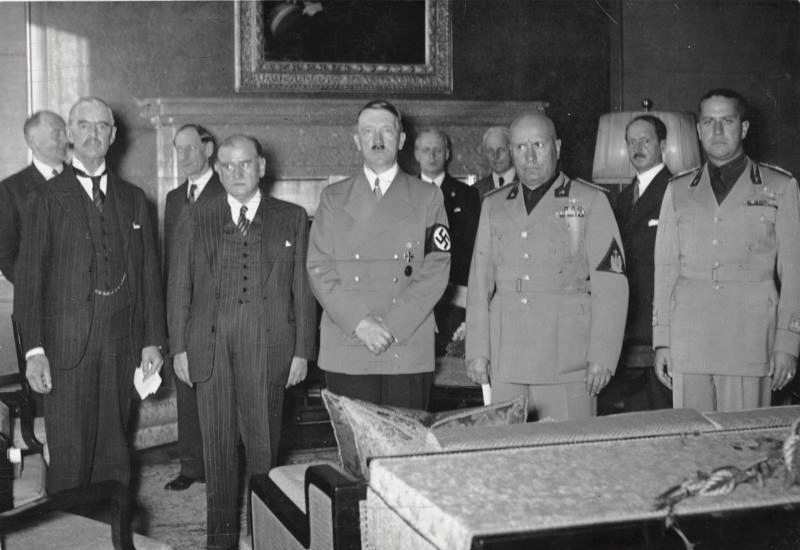
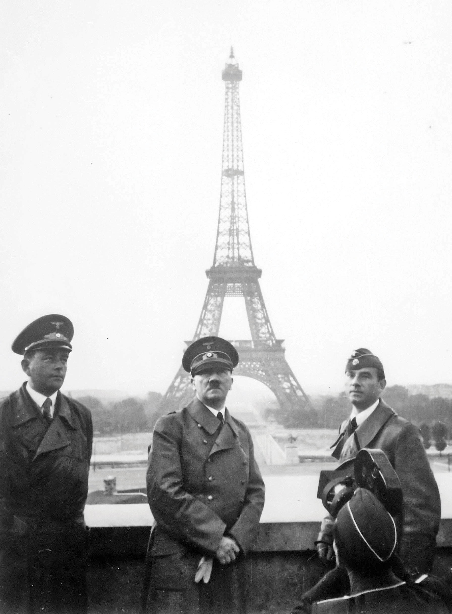
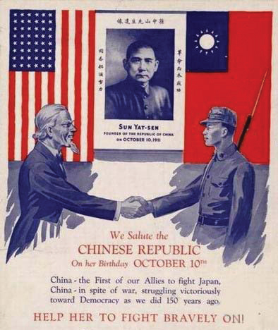

Asian historians typically cite the Japanese invasion of China in 1937 as the start of World War II. Western Europeans usually select the German invasion of Poland in 1939 as the beginning of the war, while Russians emphasize the German invasion of their nation in 1941. US history textbooks concur with their Western European colleagues but usually offer few details regarding the military history of the conflict until the December 7, 1941, attack against Pearl Harbor. Each of these choices tells us a great deal about the perspectives and priorities of those who produce, assign, and consume history books. Yet these same choices may also distort the global aspects of the war and marginalize the way World War II and its reconstruction shaped the second half of the twentieth century. No textbook could ever cover the entire global scope of the war. As critical thinkers, students should be aware of these choices and consider why some aspects of the war are emphasized over others. Why might the Eastern Front be marginalized in favor of other theaters? How might this same chapter be different in a French, British, German, Russian, Chinese, or Japanese textbook? How might a historian in a former British colony such as India or South Africa view the conflict?
The Treaty of Versailles ended World War I and sought to prevent future wars. Believing Germany to be the aggressor, the framers of the treaty decided to limit the German military to a small force capable only of defending their nation against a small invading army. The treaty also declared that the German-French border would become a demilitarized zone where no German troops could be stationed. In 1935, German dictator Adolf HitlerLeader of the German Nazi Party and Chancellor of Germany between 1933 and 1945. Hitler waged an offensive military campaign in an attempt to expand the German state and promote his version of Aryan supremacy, but he was defeated by the Soviet Union, Britain, the United States, and other nations who opposed his plans. defied these provisions of the treaty by rebuilding a modern army capable of mounting an offensive campaign. Hitler increased his forces by introducing compulsory military service—allegedly as a measure to provide employment for German men.
The German government also funded the construction of offensive weapons that had been banned by the Treaty of Versailles, such as submarines and tanks. The following year, he violated the treaty’s provisions regarding the demilitarized zone by placing troops near the border of France. Many of these programs were kept secret, and Hitler defended each of the obvious violations of the treaty as part of a program of national defense. The armies of Europe had become much more powerful, Hitler explained, and Germany was a landlocked nation surrounded by rivals. As a result, he concluded, following the exact provisions of the Treaty of Versailles would leave his people vulnerable on all fronts.
France and Great Britain doubted the Fuhrer’s sincerity, but did little more than verbally protest as Hitler continued to expand his forces and further violate the provisions of the treaty. Those world leaders who did not want to confront Hitler pointed out that many elements of Hitler’s explanations were true. Some of the provisions of the Versailles Treaty did seem excessive, they reasoned, and each time they brought their concerns to Hitler’s attention, he was quick to respond with an explanation proclaiming his peaceful intentions. Other voices throughout Europe warned that Hitler was bent on conquest and predicted a second world war. The leaders of Europe hoped otherwise and followed a program of appeasement.
Hitler engineered the annexationOccurs when one nation or other political entity declares its sovereignty over another area that was previously beyond its borders. Annexation occurs regularly when cities expand their territory. However, there are usually strong voices of opposition when nations declare sovereignty over areas beyond their borders. of Austria into Germany in March 1938. Austrian Nazis followed the annexation with an election where the people of that nation overwhelmingly expressed their support for becoming part of his Germany. The support of both the people and the government of Austria was heavily influenced by the actions of Austrian Nazis and the German army that occupied Austria. Given the methods of fraud and intimidation of their new rulers, few in or outside of Austria wished to challenge what had just occurred. Hitler soon demanded that the region of Czechoslovakia known as the Sudetenland, which was home to many people of German origin, also become part of his nation.
Figure 7.23
European leaders meet at the 1938 Munich Conference. From left to right, British Prime Minister Neville Chamberlain, Prime Minister of France Édouard Daladier, Adolf Hitler, and Italian dictator Benito Mussolini.
In September 1938, the leaders of France and Britain called a conference in Munich, Germany, to discuss their concerns with the rapid expansion of Hitler’s Germany. France and Britain were each imperial powers with colonies all over the globe held in place by military force, so it was difficult for the leaders of these nations to object to German expansion and not appear hypocritical. German expansion had so far included mostly people of German descent and occurred peacefully with the official if not genuine support of the leaders of the involved areas. The two nations agreed to not interfere with Hitler’s plans in Czechoslovakia in exchange for his promise that he had no further plans for expansion.
Most Europeans and Americans were satisfied and cheered British Prime Minister Neville Chamberlain’s announcement that the Munich Conference had ensured “peace for our time.” Of course, Czechoslovakia was not invited to the Munich Conference and was in no position to resist Germany alone. The Germans annexed the Sudetenland in October 1938 and proceeded to threaten Czech leaders until they capitulated to Hitler’s forcible annexation of the rest of Czechoslovakia the following spring.
Hitler and Soviet Premier Joseph StalinA Bolshevik revolutionary that emerged as the leader of the Soviet Union by the outbreak of World War II. Stalin ruled as a dictator until his death in 1953 and dealt ruthlessly with rivals and opponents. signed the German-Soviet Non-Aggression PactAn agreement between Germany and the Soviet Union declaring that neither would attack the other. Secretly, Hitler and Stalin also made an agreement dividing up Eastern Europe between the two nations. in August 1939 with both nations pledging that they would not attack each other. They also promised to remain neutral in any war involving the other. Although Hitler used this treaty as evidence of his peaceful intentions, Western European leaders understood the potential threat that Hitler’s promise of peace represented for the people of Europe. By making a pact with Stalin, Hitler would not have to face the Russian army if a war broke out in Europe. Hitler had also formed an alliance with Italian dictator Benito MussoliniThe leader of Italy’s National Fascist Party, Benito Mussolini became the dictator of Italy in the 1920s. He later formed an alliance with Adolf Hitler. Until he was deposed by the Italian people in 1943, Italy fought against the Western Allies and on the side of Hitler’s Germany. However, Hitler was able to reinstall Mussolini as a puppet ruler almost immediately after he had been deposed. Afterwards, Italy was effectively ruled by the German military until just before the end of the war in 1945..
Because of these two treaties, Germany would not face enemies to the east and south as they had in World War I if a general war were to erupt. Still, the consequences of the last war were so terrible for Germany that most observers assumed that another general war would not break out as long as diplomacy continued. After all, World War I only occurred after multiple nations declared war instead of working out a diplomatic solution to the invasion of Serbia. So far, none of Hitler’s actions qualified as an invasion because he had engineered formal capitulation by the leaders of each nation he annexed.
The next nation Hitler set his sights on refused capitulation. Poland rejected German attempts at annexation and declared its intention to defend itself from an invasion. France and England felt they could do little to forcibly prevent Hitler’s previous actions because they had all been officially sanctioned by the leaders of the affected nation. Polish resistance meant that a line had been drawn in the sand that, if crossed, would prove his intentions malignant and demand military intervention. For this reason, the leaders of both nations pledged to support Poland and believed their ultimatum would force Hitler to reconsider further territorial acquisitions. Instead, the Fuhrer ordered his own troops to burn houses near the border of Poland, blame the Polish for attacking German-held territory, and launch an attack to “defend” German territory from “Polish Aggression.”
On September 1, 1939, the German Luftwaffe launched massive attacks that quickly overwhelmed the nation’s defenses. German infantry and armored divisions simultaneously invaded Poland, while a handful of motorized infantry units raced into the Polish countryside from every direction. The Germans called this strategy of rapid coordinated attacks by ground and air forces “blitzkrieg.” The goal was a rapid offensive that could immediately destroy a nation’s air force and simultaneously overrun and encircle its major armies stationed near the nation’s borders. The name of this strategy roughly translates to “lightning war,” a moniker the overwhelmed Polish defenders could have coined as their large armies were quickly enveloped and forced to surrender.
France and Great Britain responded by declaring war on Germany on September 3 but did nothing to help Poland. The Soviet Union had just signed a pact not to fight Germany and would later invade Poland from the east as part of a secret provision of that agreement. Despite the verbal support of Western Europe, Poland was left to face the combined onslaught alone. The next three weeks brought fierce resistance on the part of the Polish people, despite the tremendous odds against them and indifference of their proclaimed allies in Western Europe. This apathy, the agreement between Hitler and Stalin, and a merciless offensive against both military and civilian targets led to Polish surrender in just over a month.
World War II was initiated by blitzkrieg on Poland, but following this initial German storm, the guns fell silent as each nation mobilized for a war many hoped would not come. Outside of Germany, civilians did not celebrate the outbreak of war as they had in 1914. German troops participated in a few offensives in Northern and Eastern Europe, while the main force prepared for an invasion. The French frantically continued work on the Maginot LineThe French line of defensive fortifications stretching from the southern limit of the German-French border to Belgium. Because the German army bypassed this line of fortification, the Maginot Line proved ineffective in World War II., an impressive network of fortifications stretching from Belgium to the southernmost limit of France along their common border with Germany.
The Germans would later refer to this time as sitzkrieg, “the sitting war,” while most of Europe hoped against hope that history was not about to repeat itself. There was no sitzkrieg in Eastern Europe, however, as Hitler consolidated and expanded his position in western Poland while Stalin attacked the eastern portion of that nation in concert with Hitler. The Soviets also launched attacks on Estonia, Latvia, and Lithuania, conquering these former Russian-held lands with minimal resistance. Finland surrendered to Stalin after three months. The rest of the world watched and wondered if Stalin was any different from Hitler.
In April 1940, German troops launched attacks on Denmark and Norway. Hitler claimed that his actions were necessary to protect the people of these regions from corrupt regimes. He would claim the same benevolent intentions for the Netherlands, Belgium, and Luxembourg, which he invaded the following month. Within a month, German armies had conquered most of these areas and even trapped the small British and French forces that had deployed to these regions in a poorly managed attempt to halt the German advance.
The French had constructed an “impregnable” system of fortifications known as the Maginot Line along the German-French border. The Maginot Line is regarded as one of the classic examples of military unpreparedness, not because it was too thin, but because the Germans simply sidestepped this well-defended border by attacking Belgium and Luxembourg. The French had prepared for this possibility and deployed troops to Belgium, but the Germans launched a second offensive south of these forces in the Ardennes Forrest. The French had planned for this possibility but believed that the armies of these nations would be able to hold the German advance long enough to redeploy their armies to meet the threat. However, the German advance moved so rapidly that even German commanders were surprised. Moving faster than anticipated and even beyond their supply lines, German armies crossed the border into France.
Table 7.1 World War II Alliances
| Allied Powers 1939–1940 | Britain, France, Poland |
| Allied Powers 1941–1945 | Britain, Soviet Union, United States, China, France |
| Axis Powers | Germany, Italy, Japan |
| Other Nations with Allied Powers | Australia, Belgium, Brazil, Canada, Czechoslovakia, Ethiopia, Greece, India, Mexico, Netherlands, New Zealand, Norway, Poland, South Africa, Yugoslavia |
| Other Nations with Axis Powers | Hungary, Romania, Bulgaria |
British and French forces rushed to Northern France to meet the German offensive, much as they had during the early stages of World War I. However, German tanks and motorized infantry moved rapidly through the Ardennes Forest to the south of their positions, continued westward, and then turned north. Allied commanders in Northern France had not prepared for this tactic, largely because they assumed that the Ardennes was impassable for a large invading army. As a result, the Germans were able to flank the Allied position in Northern France, cut their supply lines, and pin the British and French between German forces and the northern coast of France. Nearly the entire British army in France, known as the British Expeditionary Force, was vulnerable to attack by German warplanes as they retreated toward the French port city of Dunkirk. Many feared that these men and the French armies with them would surrender or be annihilated unless they could somehow escape back to England.
The British were especially alarmed at the prospect of losing such a large portion of their army, especially given the probability that Hitler would invade their nation next. Military officials and local people worked together to ferry over 300,000 British and French troops to England using any boat that could cross the English Channel. This effort became known as the Dunkirk EvacuationThe rapid retreat of the British Expeditionary Force and other Allied troops from the area surrounding Dunkirk, France, in May 1940. After the German blitzkrieg pinned the British army against the English Channel, nearly 200,000 British soldiers and more than 130,000 French troops used civilian and military vessels to cross the English Channel to safety in Britain.. The British were relieved that their army had not been surrounded as many had predicted. British Prime Minister Winston ChurchillLifelong British politician who frequently warned his countrymen of the dangers posed by Adolf Hitler’s ascendency in Germany. Upon the resignation of Neville Chamberlain in 1940, Churchill became Prime Minister of Britain and led his nation against Germany during World War II. reminded his nation that “wars are not won by evacuation.” He pointed out that Britain had succeeded only in abandoning their weapons and equipment to the Nazis. Meanwhile, France was left to face the German onslaught alone.
The situation was quickly deteriorating for the bulk of the French army, still fighting but the victim of crippling early losses. Half of their army had been captured or were still manning the defenses along the shared border of Germany and France when the bulk of the German army descended upon Paris. On June 10, an opportunistic Benito Mussolini declared that his nation of Italy was prepared to aid Germany and invade France from the south. French World War I hero Marshal Henri Petain believed the situation was hopeless and urged his nation to accept a deal with Hitler. On June 22, the leaders of France concurred and agreed to Hitler’s terms.
Figure 7.24
Adolf Hitler poses in front of the Eiffel Tower in June of 1940.
The armistice declared that Germany would control Northern France while Petain would lead a nominally independent French government in the south. The new capital of France was located in the small resort town of Vichy in southern France. Hitler promised that this “independent” French state would be free to make its own decisions and maintain its global empire. However, Petain increasingly found himself choosing between doing the Fuhrer’s bidding or risking further bloodshed. French general Charles de Gaulle escaped to England and established a rival French government in exile that opposed the Nazi-accommodating regime in Vichy. Tens of thousands of French citizens vowed to continue the war by joining underground resistance movements throughout the nation. The French soldiers who had escaped to England continued training in anticipation of the opportunity to liberate their homeland. They would not get that chance until 1944.
Much has been made of the rapid defeat of France in World War II. The French army was a large, well-trained, modern army. Its leaders had prepared for a German attack through Belgium, and there was no shortage of valor among the French troops. The crucial error was not only a failure to prepare for an attack similar to the German strategy in World War I but also being unprepared for the German attack through the Ardennes Forest. The Maginot Line was very thin in this area because the French believed the heavily wooded terrain of the forest served as a natural barrier.
The Maginot Line itself was an impressive line of defense, but the French could not build this type of fortification across the entire length of Eastern France due to the high water table that prevented underground construction in many areas. Political and diplomatic considerations also dictated the French defensive effort. From the Belgium point of view, had France extended the Maginot Line all the way north through the Ardennes and to their common border, this would indicate that the French did not intend to assist them in the case of a German invasion but rather intended to hide behind their fortifications. Instead of alienating their ally, the French hoped to quickly deploy troops to a line of forts in Belgium. This plan failed because German paratroopers captured these forts. As a result, the greatest French military blunder was not the construction of the Maginot Line but France’s inability to match the speed of German mobilization.
As Hitler moved to consolidate his power throughout Europe, Mussolini offered to negotiate a truce in exchange for England’s acceptance of Axis domination throughout continental Europe. Britain still maintained a formidable navy and air force but was nearly defenseless on land after their retreat from Dunkirk. Many British leaders considered Mussolini’s offer and recommended that newly appointed Prime Minister Winston Churchill begin negotiation with Hitler through the Italian leader. In the longest hour of his nation’s darkest day, Churchill convinced his advisers that surrender was not an option. “If this long island story of ours is to end at last,” Churchill counseled his minsters, “let it end only when each of us lies choking in his own blood upon the ground.”
Hitler responded to Churchill’s refusal to negotiate with an attack intended to test British resolve. Aerial bombardment of English cities began in earnest in July 1940. The Luftwaffe’s objective was to break the British will to resist and to destroy the British Royal Air Force (RAF). Even if the island continued to fight, by controlling the skies over Britain, the German navy could land ground troops on the island without fear of being attacked from both the air and ground. The Luftwaffe conducted nightly bombing raids with as many as 1,000 planes targeting airfields, aircraft factories, coastal defenses, and eventually, major cities in hopes of breaking the British will to resist. The Battle of BritainAerial battle between the German Luftwaffe and the Royal Air Force in the summer of 1940. Britain prevented German forces from destroying their air defenses, and in doing so, thwarted the planned German invasion of the island. had begun.
The British had fewer pilots and aircraft but had the advantage of new technology called radar that could track enemy aircraft. This innovation allowed British pilots to intercept German bombers en route to their targets and launch counterattacks that would harass German fighters. Because the battles occurred over the skies of Britain, RAF pilots were usually rescued after ejecting from planes damaged in battle, while German pilots were killed or captured. In addition, German aircraft were already low on fuel by the time they crossed the English Channel.
Figure 7.25

A British poster honoring the pilots of the Royal Air Force that defended their nation during the Battle of Britain.
By August, RAF pilots were shooting down significantly more German planes than they were losing. The RAF’s success was partially due to the acquisition of experienced pilots who had escaped from Nazi-occupied France and Poland, as well as pilots from Canada, South Africa, India, Australia, and other British colonies. By mid-September, Hitler postponed the planned invasion of Britain. The Germans continued to bomb military installations and cities throughout Britain, but the threat of imminent invasion had passed for the moment.
The Germans had been stopped but not defeated. The Battle of Britain was the first major battle waged by air forces and, although technically a draw, the first strategic defeat of German forces. Moreover, the battle demonstrated the importance of air power in modern warfare. British Prime Minister Winston Churchill united his country and convinced the nation’s leaders to reject Hitler’s truce at a moment many predicted that Britain would be invaded.
Churchill himself had a flair for hyperbole that often led to him being caricatured in the years before the war. With his nation on the brink of destruction, Churchill’s dramatic speeches now seemed appropriate, and his eulogy of the airmen who sacrificed their lives inspired his countrymen and many throughout the world. “Never in the field of human conflict was so much owed by so many to so few,” Churchill exclaimed, connecting the heroic stand of the RAF to the continued freedom of Europe and the United States. His American cousins across the Atlantic greeted his speech and the RAF victory with enthusiasm and relief, yet the majority of Americans did not yet believe that the United States was in jeopardy. Even as the battles over the skies of Britain continued through the next year, the majority of Americans opposed direct military intervention.
Hitler’s actions against the Soviet Union soon demonstrated Churchill’s wisdom in rejecting a deal with Hitler. Despite a nonaggression pact that was not yet two years old, Hitler invaded Russia in June 1941. His objectives were strategic, political, and personal. He wanted to seize control of oil fields and gain access to the Black Sea in the south, seize the industrial cities and fertile Russian plains in the center, and push his hated Bolshevik rival all the way west to Siberia. The Russian army occupied a large portion of Eastern Europe because their 1939 pact with Hitler secretly included the promise that the two nations would divide this territory, in addition to not fighting each other.
As Germany conquered Western Poland, Soviet Armies invaded the Baltic countries and Eastern Poland. Neither of these regions could defend itself against Germany or Russia. As long as the two rivals honored their pact, they could easily dominate Eastern Europe. But neither trusted the other, and both had ambitions beyond sharing control of the region. Hitler recognized that Stalin shared his ambitions regarding Eastern Europe and viewed his surprise attack on Russia as a defense on the new territory he had just acquired. His decision to postpone the invasion of Britain due to the continued success of the RAF freed his land forces to launch the attack he hoped would quickly eliminate his main continental rival.
Figure 7.26

Polish Jews being rounded up by German troops inside the Warsaw Ghetto in the summer of 1943. Over 300,000 Polish Jews who were sent to the Warsaw Ghetto were killed, most in Nazi extermination camps such as Treblinka.
Hitler sent 3.5 million troops into Russia, believing that a rapid offensive across a broad 1,000-mile front could quickly lead to that nation’s collapse. He hoped to deploy his forces so rapidly that he could surround and capture Russian armies and Eastern Russian cities without much of a fight. He also hoped to overwhelm Stalin’s forces in the south and cut off Russia’s access to the oil fields from the Russian border to the Middle East.
Hitler considered his recent success in Poland and France, as well as Russia’s quick exit from World War I, in support of this strategy. Although it is clear in hindsight that the invasion was poorly conceived, many predicted he would defeat Russia within three months. In World War I, the Russian people waged a rebellion, and the nation descended into civil war as a result of the hardships the nation faced as it tried to repel the German offensive, Hitler reasoned. Had he gone further back in history he might have considered Napoleon’s ill-fated attempt to conquer Russia. Stalin followed the same strategy that led to Napoleon’s defeat, ordering a scorched earth policy where Russian commanders destroyed farms and cities as they retreated to prevent the Germans from seizing food and supplies. Hitler’s plans were based on the assumption that Russia would fall before the winter of 1941. With no food or shelter along a 1,000-mile front, it soon seemed that Hitler’s troops might share the fate of Napoleon’s forces in the harsh Russian winter. That is, if Russia could survive the initial German onslaught.
As German troops advanced through Russia, Hitler’s storm troopers waged a campaign of terror in Eastern Europe. Millions of Jews, as well as gypsies, homosexuals, resistance fighters, and people with disabilities, were terrorized and murdered by specialized Nazi units. Jews throughout Poland and Eastern Europe were first ordered to walled-in ghettos in the center of cities like Warsaw. One of the greatest stories of resistance came from a counterattack of Polish Jews in the Warsaw ghetto when faced with evacuation to the concentration camps in 1943. The attack was heroic in spirit but failed to stop the Holocaust.
Poland was the site of the majority of the Nazi extermination camps, with some of the largest camps such as Auschwitz consisting of a network of many smaller camps. Historians estimate that 6 million Jews were killed by German soldiers in the Holocaust. Although the Warsaw ghetto uprising was quickly crushed, its participants and the thousands of Jews and their allies who resisted the Nazis demonstrated their humanity and contributed to hundreds of thousands of survival stories against a seemingly unstoppable force that desired nothing less than total genocide of an entire race.
The American people were alarmed by Hitler’s aggressive posture in the 1930s but wanted assurance that their nation would not become involved in another European war. Many believed that US involvement in trade with the warring nations of Europe in World War I had led to the nation’s increasing involvement and eventual entry into that war. In response, Congress passed the Neutrality ActA series of laws passed between 1935 and 1939 that regulated the sale and transportation of weaponry to nations that were at war with one another. The 1935 Act banned the sale and transport of weapons in hopes of preventing America from becoming involved in another foreign war. The Neutrality Acts of 1937 and 1939 amended the 1935 law by permitting the sale of weapons under certain circumstances as a means of aiding the opponents of Hitler and Japan while boosting the US economy. of 1935 that banned the sale of weapons to nations at war. The law was first applied to the Italian invasion of Ethiopia and later expanded to include the Spanish Civil War.
Some observers criticized US isolationism for what they viewed as a failure to aid victims of aggression. Few Americans favored intervention in Ethiopia or Spain, however, and US isolationism later included a desire to avoid involvement within the escalating conflicts in Europe and Asia during the late 1930s. Roosevelt publicly favored strict neutrality, but his private communications indicated a growing desire to aid Britain and France should a war with Germany occur. Although the law clearly forbade US businesses from trading with nations at war, Roosevelt assured British and French leaders that the might of US industry stood ready to assist them if Germany ever attacked them.
In 1937, Roosevelt called Congress into a special session to reconsider the wisdom of strict enforcement of the Neutrality Act. The president was in daily contact with Winston Churchill and did not believe that Western Europe would be able to defeat Germany should a war occur unless these nations had access to US markets. He proposed an amendment to the act that was soon nicknamed “cash and carryThe name given to a provision amending the Neutrality Act of 1935 to permit US companies to sell supplies to nations at war as long as those nations paid immediately in cash and arranged to transport those materials on their own ships..” This provision altered the Neutrality Act and permitted the United States to sell armaments to any nation if two conditions were met. First, they must pay in full for their merchandise at the time of purchase (cash). Second, they must transport those items back to their own nations on their own ships (carry). The policy appeared neutral but clearly favored the Western Allies as German ships could not reach the United States without first passing through waters controlled by the British and the French. The law also banned US civilians from traveling to nations that were at war—an attempt to prevent a recurrence of the Lusitania sinking that had pushed the nation toward intervention in World War I.
The advantages of “cash and carry” for US businesses still mired in the Great Depression led many political leaders to tentatively support the idea. Unlike the US policy of selling merchandise on credit and loaning money during the First World War, US banks and businesses would not be tied to the fortune of the nations that were indebted to them. Equally important, US ships would not have to cross the perilous Atlantic and risk being sunk by German U-boats. Others disagreed, pointing out that “cash and carry” would make America’s professed neutrality a farce and was simply one step closer to a declaration of war.
Congress debated these arguments for over a month. The Democratically-controlled legislature ultimately sided with Roosevelt, passing the Neutrality Act of 1937 and legalizing cash-and-carry trade. By the outbreak of war in 1939, Congress also suspended the provisions that banned the sale of military equipment to belligerent nations. Before this decision, Roosevelt privately entertained creative suggestions on ways to circumvent the law, such as US companies sending airplane parts to Canada that could then be assembled and shipped to England.
Figure 7.27

Tanks and warplanes were not the only thing transferred to the Western Allies by the Lend-Lease Act. In this photo, Wisconsin cheddar cheese is being loaded and shipped to Great Britain to help feed its soldiers.
Churchill and Roosevelt communicated regularly, and by the time of the German invasion of France, both men believed that a genuine US policy of neutrality would doom the Allies. Churchill’s dispatches to Roosevelt on this subject became more direct as the Nazi advance continued, warning the US president that a successful German invasion of Britain would threaten US security. If such a scenario occurred, Britain would be forced to sign an armistice that might lead to the British navy and air forces falling into Hitler’s hands, the Prime Minister explained. These powerful weapons might soon be unleashed on US shores.
Ironically, Churchill’s dire “worst-case scenario” could also be used by those who opposed sending military aid to Western Europe. Isolationists voiced the concern that military aid to Britain might simply fall into German hands. Many military analysts predicted that Britain would soon share France’s fate, and Germany’s swift victories in Poland and France had resulted in Germany capturing the majority of Polish and French munitions. In addition, America’s own army was training with limited supplies of ammunition, while its air force lacked enough planes to train pilots. Rather than ship vital military equipment to Britain that might be captured by the Germans, isolationists argued, the United States should concentrate first on building up its armed forces.
Roosevelt shared many of these concerns but believed the British could defend their island empire if they were provided with US munitions. Throughout the summer of 1940, the Roosevelt administration declared trainloads of weapons and ammunition belonging to the army as “military surplus” that was then sent to assist the British. Roosevelt also instituted a peacetime draft to increase the size of the military. Perhaps most controversial of all his decisions, the president exchanged fifty destroyers for a British promise to lease military bases throughout their empire to the US Navy. These were bold moves given the fact that 1940 was an election year and the majority of Americans still wanted to maintain neutrality. Even as Roosevelt maintained his opposition to entering the war, it was apparent that he was steering the nation away from genuine neutrality.
As the presidential election of 1940 neared, Roosevelt decided not to follow the tradition started by George Washington, who declined reelection after serving two terms. Roosevelt believed that the situation in Europe was reason for him to seek an unprecedented third term as president. His campaign supporters devised an ingenious, if not devious, scheme at the Democratic National Convention in Chicago. Their goal was to make it appear as if the nation demanded that Roosevelt remain in office through the crisis. The Democratic mayor of Chicago filled the convention hall with Roosevelt supporters who chanted “we want Roosevelt” on cue. He allegedly even had a Roosevelt supporter hidden in the building with a microphone and loudspeaker, adding to the noise. Together, Roosevelt’s supporters made it appear that a majority of delegates would accept no other candidate. Roosevelt accepted the nomination he likely conspired to achieve and defeated Republican candidate Wendell WillkieA former Democrat, Wendell Willkie accepted the 1940 presidential nomination of the Republican Party against the incredibly popular Franklin Delano Roosevelt. Willkie ran on a platform opposed to the massive spending of New Deal programs and accused the president of pushing the nation toward war. Following Roosevelt’s victory, Willkie reversed course regarding events in Europe and became one of the leading supporters of FDR’s requests to provide military aid to Britain.. Key to Roosevelt’s victory was the President’s promise to not send US troops into any foreign war.
Roosevelt believed the key to keeping his promise was to dramatically increase the amount of military aid that was being sold and given to England. The cash-and-carry policy was insufficient to meet this demand given the dwindling gold reserves of the British government. In January 1941, Roosevelt proposed the Lend-LeaseA program initiated in March 1941 that provided Britain, France, China, and the Soviet Union $50 billion in military aid to continue their fight against Germany and Japan. In return for the use of US military equipment, the recipients agreed to lease portions of their territory for use by the US military. The primary purpose of the law from the US perspective was to ensure that the recipient nations were able to continue the war and provide weaponry that would be used against their mutual enemies. program, which gave the President of the United States the authority to lend, lease, or sell military supplies on credit to any nation the president deemed vital to the defense of the United States.
The RAF had just won a temporary victory against the Luftwaffe that would at least stall any German invasion of the British Isles. This convinced many Americans that the British might be able to withstand the Nazis for another year with US aid. However, isolationists protested that the Lend-Lease program was just one step away from a declaration of war. By lending weapons to Britain, isolationists argued, the United States was not only repeating the actions that led to its eventual participation in World War I but doing so at its own expense.
Members of the isolationist America First Committee believed their country was once again being deceived by business and political leaders who wanted the United States to enter the war for their own personal gain. The America First CommitteeFormed in 1940 to represent those Americans who feared their nation was drifting toward war, the America First Committee claimed a membership of 800,000 and mobilized in opposition to FDR’s Lend-Lease program. The organization disbanded following the Japanese attack on Pearl Harbor. had more than six hundred chapters and hundreds of thousands of members, yet more and more Americans were beginning to agree with the president. Lend-Lease seemed to many Americans as the only way to prevent complete Nazi takeover of Europe, and it would also create jobs in wartime industries. Congress was still overwhelmingly Democratic and passed Roosevelt’s bill in March, despite Republican opposition. The law would eventually lead to transfers of $50 billion in military aid to England and other allies.
By 1940, Japan emerged as one of the world’s leading industrial nations. Japan’s military had also defeated both Russia and China in small wars, and the Japanese Empire expanded its territory in Eastern Asia, including a portion of the Korean peninsula. The nation became more democratic in 1925 when its leaders approved a proposal granting universal male suffrage, but Japan was not a democracy in the Western sense. Japan’s laws still conferred great power to the emperor and his military leaders. These men recognized that military power was key to securing access to oil. They also recognized the importance of mobilizing troops quickly in modern warfare.
Although they patterned their military and industry after the West, the Japanese also resented Western influence and believed that the United States, Britain, and France had not dealt fairly with their nation following its contribution to Allied victory in World War I. The Japanese were also angered by the disrespect that the United States demonstrated in passing laws prohibiting Japanese immigration. However, Japan’s focus was not on the United States, at least not initially. Instead, Japanese leaders were dedicated to uniting their people behind an ambitious plan to establish their nation as the dominant power in the East. Japanese leaders viewed relations with the United States in the context of their expansionistic plans. They valued diplomacy and trade with the United States to the extent that these activities might further this aim.
Figure 7.28
This World War II propaganda poster calls on Americans to donate funds to assist China’s continued fight against Japan. Due to a desire to avoid conflict with Japan, the US offered little assistance to China until after Pearl Harbor.
For centuries, China had been the leading power in East Asia. Japanese officials recognized that China’s ongoing civil war and the imperialistic designs of Europe had divided and weakened their ancient rival. Japanese military leaders believed China’s turmoil represented an opportunity for Japanese expansion. An alleged terrorist attack on a Japanese-controlled railroad inside of the Chinese province of Manchuria in September 1931 resulted in Japanese forces being deployed to the area to investigate and protect other Japanese investments. Many around the world believed that the Japanese agents set off the blast as a pretext by which they might justify the resulting military occupation of the region. China made this same point when it asked the League of Nations to intervene on China’s behalf. Members of the League protested the actions of Japan in violating the sovereignty of Manchuria, but they offered no assistance to China. Conflicts between Japan and China escalated from this incident, known as the Manchurian Crisis, until the formal declaration of the Second Sino-Japanese War in 1937.
Even as Japanese forces invaded their nation in 1937, the Chinese people remained divided between Socialists and conservatives who sought a restoration of monarchy. The Chinese Civil War continued despite the invasion, and both sides feared that sending their own troops to fight the Japanese would leave their armies vulnerable to each other. As a result, Japanese forces quickly occupied most of China’s eastern coast. The war was extremely brutal. Japanese leaders preached that they were members of a master race, similar to the Nazi worldview. Severe atrocities against Chinese civilians became commonplace. The most infamous model of the war’s inhumanity occurred in December 1937 when Japanese soldiers raped, tortured, and murdered an estimated 100,000 to 200,000 civilians in the former capital city of Nanking. To this day, some Japanese historians argue that this infamous atrocity known as the Rape of Nanking was little more than Chinese propaganda.
The United States responded with shock and dismay at the brutality of the war in Asia. However, the US government did little to intervene, even after Japanese aircraft attacked and destroyed a US naval vessel while in port near Nanking. Even after a film of the sinking of the USS Panay showed Japanese fighter planes gunning down survivors, the majority of Americans believed that recent events demanded withdrawal from the region rather than sending more military forces.
In many ways, the situation in Asia resembled that of Europe. Japan believed that its people were racially superior to the various people of mixed ancestry living throughout Asia. They not only sought to increase their territory but also hoped to establish something they called the Greater East Asia Co-Prosperity SphereWorld War II–era Japanese vision of a united Asian continent composed of nominally independent nations that each accepted the leadership of Japan in many aspects of international and domestic affairs. The concept stressed liberating Asian nations from Western colonialism, but many critics saw Japan as merely seeking to replace Western rule and create their own Empire., which would feature Japanese domination over former European colonies and independent Asian nations alike.
Rather than send troops, US and European leaders called for economic sanctions and warned that harsher steps would follow if Japan continued its aggression. President Roosevelt banned the exports of some armaments and aircraft parts to Japan in 1940 after its leaders formed a military alliance with Germany and Italy. Of all the products Japan imported from the United States, petroleum, especially aviation fuel, was the most important given Japan’s limited access to oil fields.
Americans were hesitant to end all trade with Japan, as US forces in the Philippines were vulnerable to attack. As long as the oil-exporting United States maintained trade relations with Japan, the US forces in the region were safe and both nations could maintain neutrality in the affairs of the other. However, as Japan increased its brutal attacks throughout Asia in 1940, the United States moved away from neutrality. Roosevelt decided that the United States could not sell oil that would fuel the Japanese war machine. By late summer, Japan and the United States were no longer trading partners.